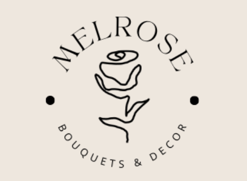
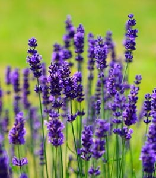
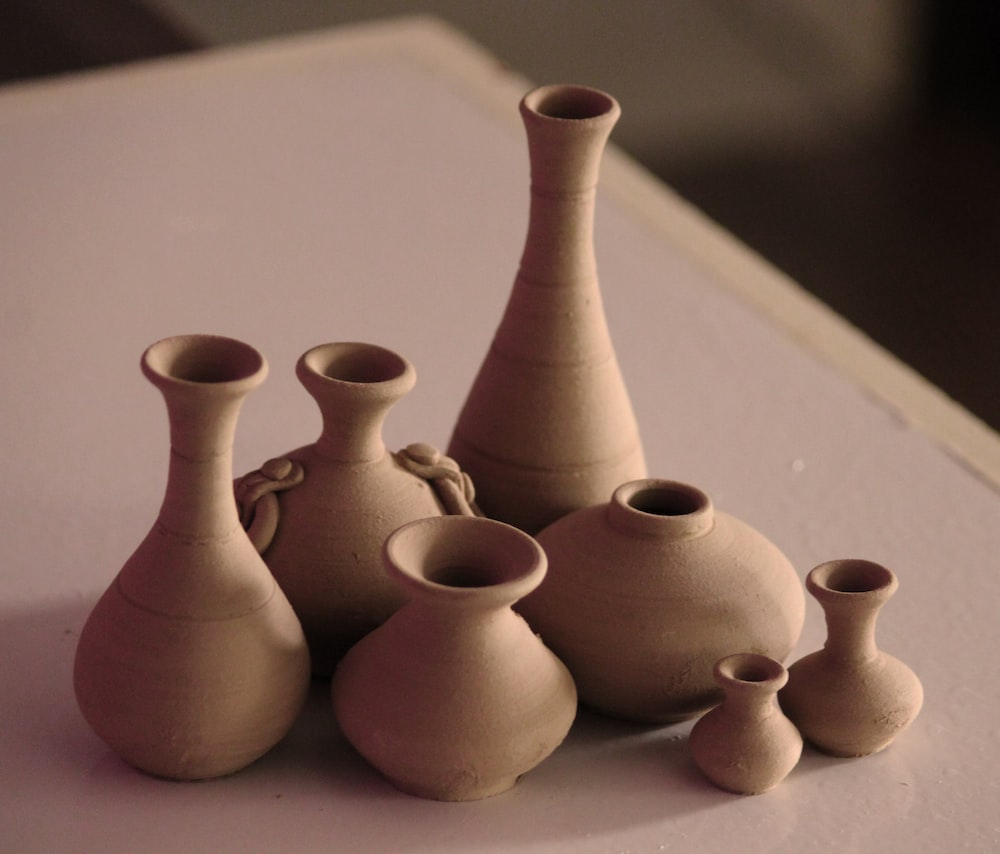

Home
Vendors
About
Contact
Blog
Lavender Season Is Coming To An End; Come Get It While It Lasts!
Click Here to Read More!

Why Pottery Items Make Such a Nice Addition In Your Home
Click Here to Read More!
